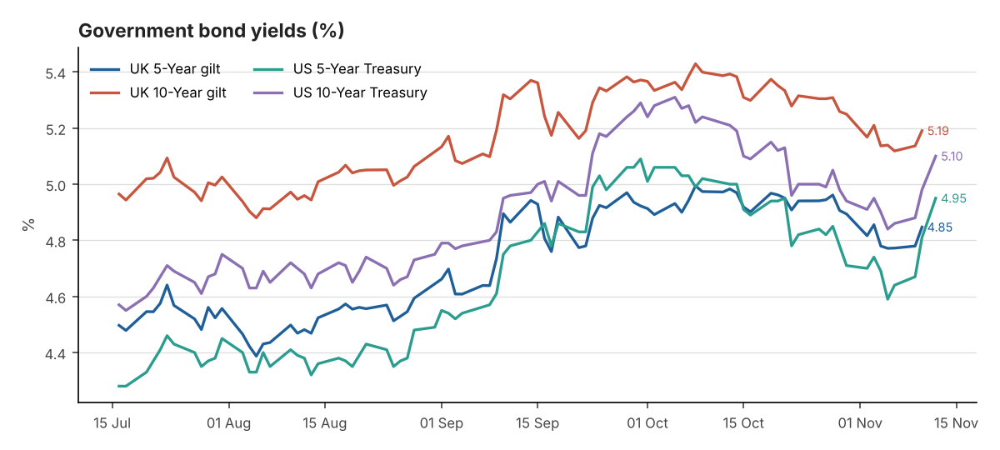
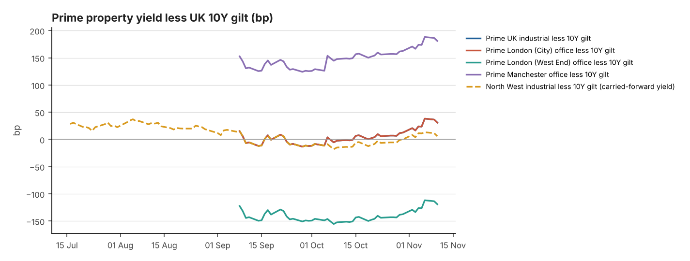

Date: 13 November 2026
Reporting time: 06:30 UK time
Generated 2026-11-13 06:30 UTC · run 20261113T063030Z · commentary: analyst note. Each figure shows its own observation date. Definitions, data-quality notes and full sources are in the appendix.
Alerts - Prime yield moves in the last 7 days (Knight Frank Prime Yield Guide, Nov 2026): UK Industrial & Logistics +12.5bp; Prime Distribution Warehouses +12.5bp; South East Industrial +12.5bp; Greater London Industrial +12.5bp; Prime Multi-let Industrial (Rest of UK) +12.5bp; London West End Offices +12.5bp; London City Offices +12.5bp; Manchester Offices +12.5bp; Regional UK Offices +12.5bp. - Corporate action — SEGRO: Recommended share offer from Prologis (0.0920 new Prologis shares per SEGRO share, partial cash alternative at 1,031.7p; completion expected H1 2027). Shares trade on deal terms.
| Market | Latest Yield | Daily | 7-Day | 30-Day | Observed | Source |
|---|---|---|---|---|---|---|
| UK 5-Year gilt | 4.85% | +6.8bp | -0.8bp | -12.7bp | 10 Nov 2026 | Bank of England Database (IADB) |
| UK 10-Year gilt | 5.19% | +5.4bp | -1.9bp | -20.9bp | 10 Nov 2026 | Bank of England Database (IADB) |
| US 5-Year Treasury | 4.95% | +14bp | +36bp | -5bp | 12 Nov 2026 | US Treasury - Daily Treasury Par Yield Curve Rates |
| US 10-Year Treasury | 5.10% | +12bp | +26bp | -11bp | 12 Nov 2026 | US Treasury - Daily Treasury Par Yield Curve Rates |
| UK 2-Year gilt | 4.76% ⚠ stale | Not verified | Not verified | Not verified | 05 Nov 2026 | News report (rallies.ai) of BoE decision-day trading (secondary) |
| UK 30-Year gilt | 5.71% | +8bp | Not verified | Not verified | 12 Nov 2026 | Trading Economics (secondary) |
| US 2-Year Treasury | 4.86% | +13bp | +40bp | +7bp | 12 Nov 2026 | US Treasury - Daily Treasury Par Yield Curve Rates |
| US 30-Year Treasury | 5.43% | +8bp | +18bp | -13bp | 12 Nov 2026 | US Treasury - Daily Treasury Par Yield Curve Rates |
10Y less 5Y: UK +34.3bp (10 Nov 2026) · US +15bp (12 Nov 2026)
Changes in basis points. † = comparison crosses sources or instruments (indicative).

| Indicator | Latest | Previous | Date | Change | Source |
|---|---|---|---|---|---|
| BoE Bank Rate | 4.00% | 3.75% | effective 05 Nov 2026 | +25bp | Bank of England Database (IADB) |
| SONIA (overnight fixing) | 3.9837% | 3.9842% | 10 Nov 2026 | -0.1bp | FRED IUDSOIA |
| 5Y SONIA swap (finance-cost reference) | 4.58% ⚠ stale | 4.74% | 04 Nov 2026 | -16bp | Knight Frank Prime Yield Guide (Macrobond/ICAP) (secondary) |
| Fed funds target range | 3.75–4.00% | 3.50–3.75% | effective 17 Sep 2026 | +25bp | FRED DFEDTARU |
Next MPC decision: 17 Dec 2026
Confirmed: - Bank Rate 4.00%; SONIA 3.98% (10 Nov). - GDP in line at 0.7%; UK labour data on 17 November and CPI on 18 November come before the 17 December MPC.
Not verified: market-implied pricing. A press report says markets price another hike before year-end and one more by March (InstaForex); this has not been checked against OIS data.
Interpretation: a 0.7% GDP print and US yields at 5.1% leave the hawkish case intact. The 5Y swap (4.58% on 4 Nov, stale) has probably risen with the 5Y gilt (4.85%), keeping all-in debt costs above prime yields.
| Indicator | Latest | Previous | Period | Trend | Source |
|---|---|---|---|---|---|
| UK CPI (12m) | 3.5% | 3.1% | Sep 2026 (pub. 21 Oct) | Accelerating | ONS MM23 |
| UK CPIH (12m) | 3.6% | 3.3% | Sep 2026 (pub. 21 Oct) | Accelerating | ONS MM23 |
| UK core CPI (12m, ex energy, food, alcohol & tobacco) | 2.8% | 2.6% | Sep 2026 (pub. 21 Oct) | Accelerating | ONS MM23 |
| US CPI-U (12m, NSA) | 3.7% | 3.4% | Sep 2026 | Accelerating | BLS CPI via FRED CPIAUCNS |
| US core CPI-U (12m, NSA) | 2.6% | 2.4% | Sep 2026 | Broadly stable | BLS CPI via FRED CPILFENS |
Next ONS inflation release: see Section 13
| Sector | Latest | Basis | Previous | Move | Evidence | Source |
|---|---|---|---|---|---|---|
| UK Industrial & Logistics | 5.50% | NIY | 5.25–5.50% | +12.5bp | Nov 2026 | Knight Frank Prime Yield Guide |
| Prime Distribution Warehouses ‡ | 5.50–5.75% | Not stated | 5.50% | +12.5bp | Nov 2026 | Knight Frank Prime Yield Guide |
| South East Industrial ‡ | 5.25–5.50% | Not stated | 5.25% | +12.5bp | Nov 2026 | Knight Frank Prime Yield Guide |
| Greater London Industrial | 5.25% | Not stated | 5.00–5.25% | +12.5bp | Nov 2026 | Knight Frank Prime Yield Guide |
| Prime Multi-let Industrial (Rest of UK) ‡ | 5.25–5.50% | Not stated | 5.25% | +12.5bp | Nov 2026 | Knight Frank Prime Yield Guide |
| North West Industrial ‡ | 5.25% | NIY | — | — | Q4 2025 ⚠ carried forward (317d) | Knight Frank LOGIC: North West 2025 Review |
| UK Logistics (average of 71 submarkets) ‡ | 5.74% | NIY | 5.59% | +15bp | Q3 2026 | Cushman & Wakefield UK Industrial MarketBeat |
| London West End Offices | 4.00% | Not stated | 3.75–4.00% | +12.5bp | Nov 2026 | Knight Frank Prime Yield Guide |
| London City Offices | 5.50% | Not stated | 5.25–5.50% | +12.5bp | Nov 2026 | Knight Frank Prime Yield Guide |
| Manchester Offices ‡ | 7.00% | Not stated | 6.75–7.00% | +12.5bp | Nov 2026 | Knight Frank Prime Yield Guide |
| Regional UK Offices ‡ | 7.00% | Not stated | 6.75–7.00% | +12.5bp | Nov 2026 | Knight Frank Prime Yield Guide |
Published prime yields, carried forward until new evidence appears — not daily valuations. ‡ = substitution; see appendix.
| Spread | Property yield | UK 10Y gilt | Latest spread | At evidence date | Previous comparable | Change (property / gilt) | Driver |
|---|---|---|---|---|---|---|---|
| Prime UK industrial less 10Y gilt | 5.50% (NIY, Nov 2026) | 5.19% (10 Nov) | +30.9bp | +38.2bp | +3.8bp (Oct 2026) | +27.1bp (+12.5bp / +14.6bp) | Both (reinforcing) |
| Prime London (City) office less 10Y gilt | 5.50% (Not stated, Nov 2026) | 5.19% (10 Nov) | +30.9bp | +38.2bp | +3.8bp (Oct 2026) | +27.1bp (+12.5bp / +14.6bp) | Both (reinforcing) |
| Prime London (West End) office less 10Y gilt | 4.00% (Not stated, Nov 2026) | 5.19% (10 Nov) | -119.1bp | -111.8bp | -146.2bp (Oct 2026) | +27.1bp (+12.5bp / +14.6bp) | Both (reinforcing) |
| Prime Manchester office less 10Y gilt | 7.00% (Not stated, Nov 2026) | 5.19% (10 Nov) | +180.9bp | +188.2bp | +153.8bp (Oct 2026) | +27.1bp (+12.5bp / +14.6bp) | Both (reinforcing) |
| North West industrial less 10Y gilt | 5.25% (NIY, Q4 2025) | 5.19% (10 Nov) | +5.9bp | +78.4bp | Not verified | Not verified | Not verified |
A simple yield gap (property yield midpoint less 10Y gilt) — not a full measure of risk or relative value.

Market commentary (confirmed data points are listed in the appendix)
Bond markets moved against property again this week. Hot US data pushed the 10-year Treasury to 5.10% and the 2-year up 13bp. On official data, UK gilts followed: the 10-year par yield was 5.19% on 10 November and the 5-year 4.85%, with market quotes around 5.2% on 12 November. UK GDP grew 0.7% in Q3, in line with expectations. That does nothing to weaken the case for a further Bank of England hike, which press reports say markets now expect by year-end (not verified).
With Knight Frank's prime distribution yield carried forward at 5.50%+, the simple gap over gilts has narrowed to about 31bp. That is thin by any standard. If gilts hold above 5.2%, early-December agent updates will probably show further outward movement, particularly for long-income and big-box stock, where buyers price most directly off gilts.
The transaction evidence is two-tier: - Smaller, higher-yielding lots are attracting new capital. Rankeilour has £40m to deploy in £1–6m Northern warehouses, and regional offices have seen £1.1bn of investment so far this year. - Weaker assets are clearing well below book. Regional REIT's sales averaged an 8.3% NIY and 11% below valuation.
Planning is a modest positive: two grey-belt appeal wins in a fortnight suggest the new test favours applicants.
Interpretation: bond pressure is now the main risk to prime values over the next quarter. Liquidity is concentrated in high-yield, small-lot and value-add assets, where income cover makes higher debt costs tolerable.
| Company | Price | Daily | 5-Day | 1-Month | YTD | Mkt cap | Div. yield | Close | Source |
|---|---|---|---|---|---|---|---|---|---|
| SEGRO (SGRO.L) | 922.6p | — | — | — | — | Not verified | 3.4% | 09 Nov | StockInvest.us (single dated source) (secondary) |
| Tritax Big Box REIT (BBOX.L) | 145.4p | — | — | — | — | Not verified | 5.5% | 27 Oct ⚠ stale | Kalkine Media (dated 27 Oct 2026; single source) (secondary) |
| LondonMetric Property (LMP.L) | 188.2p | +0.2% | — | — | — | Not verified | 6.7% | 09 Nov | StockInvest.us; corroborated by AJ Bell last trade 188.2p (secondary) |
| British Land (BLND.L) | Not verified | — | — | — | — | Not verified | — | — | — |
| Landsec (LAND.L) | 659.0p | — | — | — | — | Not verified | — | 27 Oct ⚠ stale | Kalkine Media (dated 27 Oct 2026; single source) (secondary) |
| Derwent London (DLN.L) | Not verified | — | — | — | — | Not verified | — | — | — |
| Great Portland Estates (GPE.L) | Not verified | — | — | — | — | Not verified | — | — | — |
| Prologis (PLD) | $128.55 | -1.1% | +0.0% | -3.7% | +0.7% | Not verified | — | 12 Nov | Nasdaq (official close) |
International logistics comparators
| Company | Price | Daily | 5-Day | 1-Month | YTD | Mkt cap | Div. yield | Close | Source |
|---|---|---|---|---|---|---|---|---|---|
| EastGroup Properties (EGP) | $198.05 | +0.1% | +2.2% | +0.8% | +11.2% | Not verified | — | 12 Nov | Nasdaq (official close) |
| First Industrial Realty Trust (FR) | $55.22 | -0.1% | +2.4% | -7.8% | -3.6% | Not verified | — | 12 Nov | Nasdaq (official close) |
| Rexford Industrial Realty (REXR) | $37.64 | -0.5% | -1.3% | -0.5% | -2.8% | Not verified | — | 12 Nov | Nasdaq (official close) |
| WDP (Warehouses De Pauw) (WDP.BR) | Not verified | — | — | — | — | Not verified | — | — | — |
| CTP (CTPNV.AS) | Not verified | — | — | — | — | Not verified | — | — | — |
Latest completed trading session before the 06:30 UK briefing; end-of-day data, not real-time. London prices are in pence (GBX); US in USD; Euronext in EUR. Changes are share-price returns only, excluding dividends (not total shareholder return). ⚑ = daily move of 3% or more. Market caps from Nasdaq are as at retrieval. Dividend yield = latest annualised dividend from company reports ÷ price, where on file. "Not verified" = no licensed price feed returned data and no cited close is on file.
SEGRO — Prologis offer look-through: 0.0920 × Prologis close $128.55 (12 Nov) ÷ $1.3371/£ (06 Nov, FRED) = 884.5p per SEGRO share in Prologis stock, vs SEGRO close 922.6p (-4.1% offer spread). Partial cash alternative: 1031.7p (capped). The FX rate lags by several days, so this is indicative only.
Corporate actions on the watchlist
| Metric | SEGRO | Tritax Big Box REIT | LondonMetric Property |
|---|---|---|---|
| EPRA NTA per share | 902p | 185.88p | 200.6p |
| Loan-to-value | 31% | 32.9% | 36.7% |
| Average cost of debt | 2.8% | 3.6% | 4.0% |
| WAULT | — | 9.9 yrs | 16+ yrs |
| Occupancy | 94.5% | 93.5% | 97.4% |
| Like-for-like rental growth | 5.3% | 5.1% | 5.8% |
| ERV growth | 1.8% | 1.9% | 3.3% |
| Development pipeline | £90m potential rent | 507MW secured power | No direct development |
| Dividend (annualised) | 31.1p | 8.0p | 12.6p |
| Report basis | H1 2026 (30 Jun) | H1 2026 (30 Jun) | FY 2026 (31 Mar) |
| Premium / (discount) to EPRA NTA | +2.3% (price 09 Nov) | -21.8% (price 27 Oct) | -6.2% (price 09 Nov) |
Metrics are from each company's latest report (row "Report basis"; some metrics come from later trading updates — full detail in data/reit_fundamentals.csv). Share-price dates are shown separately.
| Date | Company | Announcement | Type |
|---|---|---|---|
| 2026-11-05 | DLN | Third Quarter Business Update | Trading update |
| 2026-11-04 | LMP | NON-EXECUTIVE DIRECTOR CHANGES | Board |
| 2026-11-02 | LMP | RETIREMENT OF MARTIN MCGANN | Board |
Verified: - No new SEGRO, Tritax or LondonMetric announcements. - Prologis closed at $128.55 (−1.1%, 12 Nov); the US comparators were broadly flat. - No new UK closes could be verified for 10–12 November; latest cited SEGRO close 922.6p (9 Nov), LondonMetric 188.2p (9 Nov), Tritax 145.4p (27 Oct, stale). - Regional REIT: net LTV 38.5%; disposals 11% below book.
Interpretation: - The SEGRO look-through (about 885p) has drifted lower with Prologis. SEGRO's own price needs a current close before the gap means anything. - Rising gilts typically weigh on long-income REITs such as LondonMetric and Tritax, but this is correlation, not established cause.
Next: LondonMetric half-year results on 24 November.
3. Rankeilour secures over £20m for UK warehouse fund
UK INDUSTRIAL · new · Property Week, published 2026-11-12
Rankeilour has raised more than £20m, giving its fund about £40m to buy single and multi-let industrial and retail warehouse assets across Scotland and the North of England. It bought a Cumbernauld asset for about £5.5m off-market, with two more deals close, and targets value-add lots of £1m–6m over the next year.
Why this matters: It adds a new buyer for the £1–6m multi-let and secondary warehouse lots that dominate North West agency stock. That supports liquidity and pricing below institutional lot sizes while bank debt remains expensive.
1. Regional cities on course for highest investment volumes in four years
PROPERTY INVESTMENT · new · Place North West, published 2026-11-12
Avison Young's Big Nine report shows £344m of office deals in Q3 across nine regional cities including Manchester and Liverpool, taking 2026 volumes to £1.1bn, 25% ahead of the same period in 2025. Volumes are on track for the highest year since 2022, though further Bank of England rate rises could limit the final total.
Why this matters: It is the clearest sign yet that investors are returning to regional offices, including Manchester, after repricing. With Knight Frank's regional prime yield at 7.00%+, buyers see income value, though another BoE hike could stall the recovery.
2. Wrenman wins Grey Belt appeal against Lancaster
PLANNING / DEVELOPMENT · new · Place North West, published 2026-11-12
The Planning Inspectorate has overturned Lancaster City Council's refusal of Wrenman Strategic Land's outline plans for up to 200 homes on 28 acres of Green Belt at Bolton-le-Sands. The key question was whether the site counted as Grey Belt, land that does not strongly check sprawl or stop towns merging; the inspector sided with the developer against councillors.
Why this matters: Two grey-belt appeal wins in a fortnight, one for logistics on the M42 and now this one in Lancashire, suggest inspectors are applying the new test in developers' favour. That improves prospects for Green Belt-edge industrial land on the M6 and M61 corridors and should be priced into land-promotion and option deals.
5. MSB Solicitors makes 9,500 sq ft Liverpool switch
OFFICES · new · Place North West, published 2026-11-12
MSB Solicitors has moved its Liverpool head office from 6,100 sq ft at No.4 St Paul's to 9,500 sq ft on the seventh floor of Forma Real Estate's No.5 St Paul's, on a 10-year lease at £26.50 per sq ft. It was Liverpool's largest office deal in Q3. Worthington Owen advised both parties.
6. Update on £81m Central Docks in Liverpool
PLANNING / DEVELOPMENT · new · Place North West, published 2026-11-12
GRAHAM is on track to finish the infrastructure for Peel Waters' 2,350-home Central Docks neighbourhood in 2028, a year after starting on site. Peel is investing £25.9m and Homes England £55.2m. Central Docks is part of the £5bn Liverpool Waters scheme, planned to include 1.2m sq ft of offices and 6.6m sq ft of residential space.
All Place North West headlines since the last briefing (Thu 12 Nov 06:00 onwards; stories summarised above are not repeated; industrial items first)
| Published | Headline | |
|---|---|---|
| Thu 14:24 | Marshall CDP puts in for Daresbury resi | |
| Thu 11:06 | [Liverpool City Region Development Update 2026 | Summary + gallery](https://www.placenorthwest.co.uk/liverpool-city-region-development-update-2026-summary-gallery/) |
| Thu 10:41 | Caddick completes £14m Crewe Youth Zone | |
| Thu 10:00 | Water: Liverpool City Region’s next development challenge | |
| Thu 08:27 | First images of Relentless’ Manchester tower double |
North West outlook
No North West industrial deals were published on Place North West in the past 24 hours. The regional signals are indirect. The Lancaster grey-belt decision, alongside the M42 logistics precedent, improves the outlook for promoting Green Belt-edge employment land along the M6 and M61. Rankeilour's new fund targets exactly the £1–6m multi-let and secondary warehouse lots common across Lancashire, Merseyside and Greater Manchester, which supports liquidity at higher yields. With gilts above 5.1%, prime North West pricing at about 5.50% (not verified; latest published benchmark 5.25%, Q4 2025) faces mild outward pressure. Value-add and smaller lots should keep transacting.
4. Regional REIT cuts debt following £32m of disposals
FINANCE / CAPITAL MARKETS · new · Property Week, published 2026-11-12
Regional REIT has cut gross borrowings by £33.1m to £233.1m after £32.2m of disposals in the first nine months of 2026, with £8.9m sold at an average 8.3% net initial yield. Sale prices averaged 11% below pre-sale book value. Net LTV fell to 38.5% from 40.4% at end-2025, and gross asset value slipped to £516.6m.
| Date | Event |
|---|---|
| Fri 13 Nov | US PPI (October) - 13:30 UK |
| Tue 17 Nov | UK labour market overview - 07:00 |
| Wed 18 Nov | UK consumer price inflation (October) - 07:00 |
Confirmed data points used in the commentary
Retrieval failures and data gaps
Property yield substitutions (‡)
Definitions
Analyst sources
Prepared from public sources for professional information; not investment advice. History: data/observations.csv, data/share_prices.csv, data/news_log.csv, data/announcements.csv; audit trail: data/audit_log.csv.